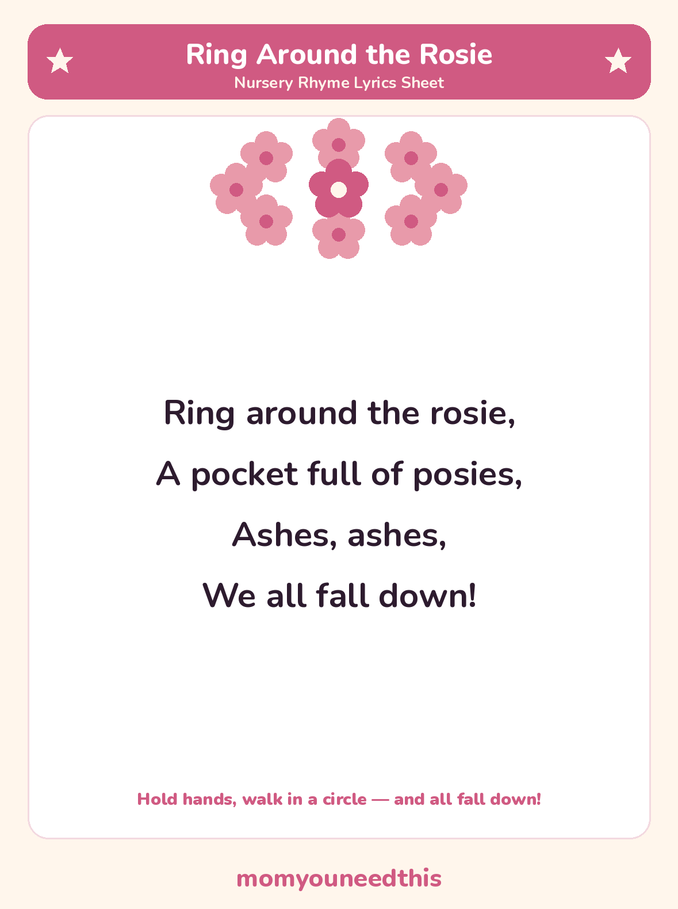

Ring Around the Rosie The classic singing game, with lyrics and a free printable
You need at least two people and a patch of floor: hold hands, circle slowly, and save the fall for the very last word. With one toddler, hold both their hands and tumble gently together — that's the whole game.
Last updated: October 25, 2026
Quick Answer
Ring Around the Rosie is a traditional nursery rhyme and singing game. The full lyrics are on this page — “Ring around the rosie, a pocket full of posies, ashes, ashes, we all fall down” — and on a free printable lyrics sheet. Children hold hands in a circle, sing together, and all fall down at the end.
At a Glance
- Rhyme: Ring Around the Rosie
- Type: Singing game
- Best for: Ages 2–6
- Printable: 1 lyrics sheet
- Tradition: In print since 1881
- Cost: Free — print at home
🎵 Ring Around the Rosie Lyrics
One short verse is the whole game. Sing it slowly for toddlers and a little faster for preschoolers — the fall at the end is the part everyone waits for.
Ring around the rosie,
A pocket full of posies,
Ashes, ashes,
We all fall down!
A British version sings “A-tishoo! A-tishoo!” in place of “Ashes, ashes” — a big pretend sneeze, which makes the fall down even funnier. Both endings are traditional; sing the one your family knows.

✂️ Download Your Free Ring Around the Rosie Lyrics Sheet
The full lyrics on one sheet — big, clear lines for young readers.
⬇️ Download Free Lyrics Sheet 🖨️ Print🎁 Free printable for ages 2–6
🤲 Sing It Together — The Actions
The actions are the rhyme. Stand in a circle and hold hands, then walk around together while you sing the first three lines. Keep the pace gentle for little legs — toddlers love being the ones who set the speed.
On “We all fall down!”, everyone crouches or sits down together at the same moment. Then jump straight back up and start again. The falling is safe, silly and completely the point — expect to play it five times in a row.
🖨️ How to Use This Rhyme
- Gather in a circle. Hold hands with your child and anyone else playing — two people can play, and a whole class can too.
- Sing and walk. Walk around in the circle while you sing, then all fall down together on the last line.
- Print the lyrics sheet. Keep it where you play, so new singers — grandparents included — can learn the words in one go.
- Let your child lead a round. A child who “reads” the sheet back and chooses the speed is practicing memory, rhythm and leading a group.
🎵 More Nursery Rhymes & Fun
🎵 Nursery Rhymes
The full hub of classic nursery rhymes — lyrics and a free printable sheet for every rhyme. Browse all nursery rhymes.
🐭 Three Blind Mice
A tiny story rhyme about three mice and a farmer's wife, with lyrics and a printable sheet. Sing Three Blind Mice.
🐑 Baa Baa Black Sheep
The question-and-answer rhyme — yes sir, yes sir, three bags full — with both verses. Sing Baa Baa Black Sheep.
📚 Learning Activities
The full hub of free printable activities for toddlers and preschoolers. Browse activities.
❓ Ring Around the Rosie FAQ
What are the lyrics to Ring Around the Rosie?
The full words are in the lyrics section near the top of this page — one short verse, sung while you circle and fall down on the final line. The free printable sheet carries the same words.
What age is Ring Around the Rosie for?
It suits ages 2 to 6. Toddlers as young as 2 can hold hands, walk in a circle and fall down on cue; older preschoolers like singing it faster and leading the game themselves.
Can I print the lyrics sheet?
Yes — the lyrics sheet is free to print at home, with no signup. Print it as many times as you like for your own family or classroom.
Is Ring Around the Rosie about the plague?
It is often said to be, but there is no evidence for that story. The rhyme was not printed until 1881, long after the plague years, and historians treat the plague link as a later tale rather than a fact. Sing it as the circle game it is.